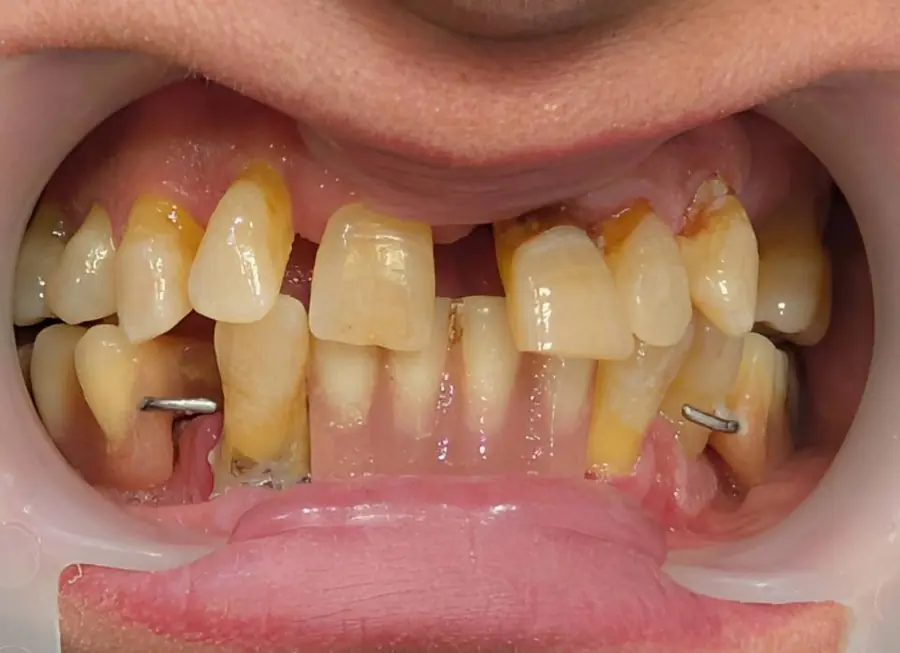

نسخه استخراجشده؛ ترجمه یا تأیید علمی انجام نشده است. وضعیت: captured
شکایت اصلی بیمار ظاهر دندانهای قدامی فک بالاست. وضعیت فک پایین طوری است که برایش طرح درمان اوردنچر در نظر گرفته شده. در فک بالا، تعدادی از دندانها با درمانهای پیشرفتهی پریودنتال قابل نگهداریاند. بیمار میپرسد: «نمیشود با ونیر کامپوزیت اینها را زیبا کرد؟»

همین سؤال ساده، نقطهی شروع تحلیل کیس است. در ارزیابی بالینی چند نکتهی تعیینکننده وجود دارد:
«قابلیت نگهداری» به معنای «قابلیت بازسازی زیبایی» نیست. بقای دندان یک سؤال است و صلاحیتش برای بار زیبایی سؤالی کاملاً جدا؛ خلط این دو، ریشهی بسیاری از طرح درمانهای شکستخورده است.
یعنی داری یک لایهی زیبایی به سیستمی اضافه میکنی که از نظر بیولوژیک ناپایدار است؛ پاسخی تکنیکی به مسئلهای که تکنیکی نیست.
حتی اگر از نظر تکنیکی بتوان ونیر انجام داد، سؤال اصلی این نیست که «میشود؟»، بلکه این است که «این درخواست چه چیزی را دربارهی کیس به ما نشان میدهد؟» در این کیس، درخواست ونیر کامپوزیت بیش از آنکه راهحل باشد، سرنخی تشخیصی بود: سرنخی از ناهماهنگی میان انتظارات زیبایی و محدودیتهای بیولوژیک و موقعیتی دندانها.
تحلیل مجموع فاکتورها، از وضعیت پریودنتال و الگوی تحلیل استخوان تا موقعیت دندانی و پروگنوز بلندمدت، مسیر را از رویکردهای ترمیمی محدود به سمت یک تصمیم بازسازی کامل برد: فول اکسترکشن و بازسازی ایمپلنتمحور.
درخواست زیبایی بیمار را فقط «درمان پیشنهادی» نبین؛ گاهی همین درخواست مهمترین دادهی تشخیصی توست و مسیر را به سمت گفتوگوی صادقانه دربارهی گزینههای واقعی میبرد.